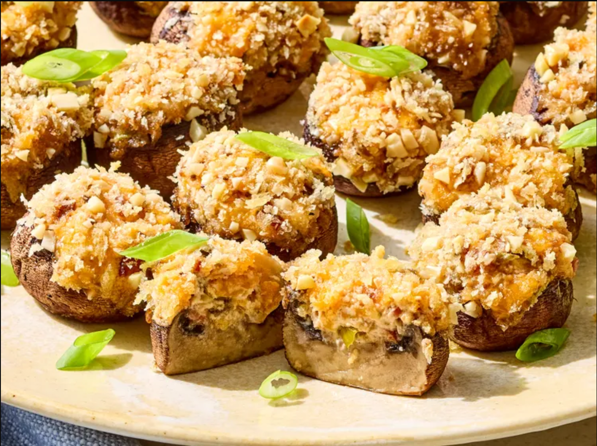

These million dollar stuffed mushrooms are pretty classic stuffed mushrooms with a rich upgrade! Deeply savory and smoky from bacon, aromatic with garlic and scallions, and topped with crispy, crunchy, and toasty panko, they'll be the first appetizer to disappear.
By Diana Moutsopoulos
Preheat the oven to 350 degrees F (180 degrees C) with a rack in the upper third position. Line a large rimmed baking sheet with aluminum foil and spray lightly with cooking spray; set aside. Wipe mushrooms clean with a damp paper towel and trim tough stems; remove and finely chop stems to yield 1 cup. Discard any remaining stems.
Heat oil in a large skillet over medium heat. Add garlic and chopped mushroom stems; cook, stirring often, until moisture has evaporated, about 3 minutes.
Transfer to a bowl, stir in cream cheese, Cheddar, bacon, scallions, soup mix, and pepper until evenly combined. Use a teaspoon measurer to fill each mushroom cap with a generous amount of filling, 1 1/2 teaspoons to 1 tablespoon each.
Stir panko and almonds together in a small bowl, dip each mushroom into panko mixture, filling side down, until evenly coated; discard any remaining panko mixture. Arrange mushroom caps, filling side up, on prepared baking sheet and spray lightly with cooking spray.
Bake in the preheated oven until mushrooms are tender and filling is heated through, 15 to 20 minutes. Without removing baking sheet from oven, increase the oven temperature to broil. Broil until panko is golden brown and almonds are toasted, about 2 minutes. Garnish with scallions.